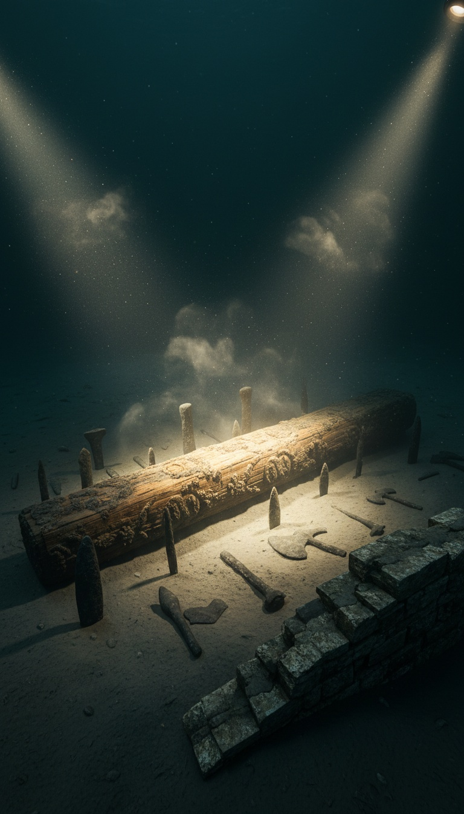

The man who proved the Titanic was real just confirmed a story your church calls mythology.
Robert Ballard located the Titanic in 1985. The scientific community gave him a standing ovation. In 1999, the same man photographed a drowned city on the floor of the Black Sea, carbon-dated to 7,500 years ago, at the exact coordinates a Columbia University model predicted a catastrophic flood would have buried a settlement. That discovery appeared on the NASA website once, in 2000. Then the coverage stopped. The story you are about to read is not hidden in fringe journals. It is sitting in peer-reviewed geology, National Geographic footage, and a NASA archive that most people never clicked.

The Geologists Named It Before Anyone Dove
William Ryan and Walter Pitman worked out of Columbia University's Lamont-Doherty Earth Observatory. In 1997 they published a paper with a specific claim: the Black Sea was not always a sea. It was a landlocked freshwater lake. The Bosphorus Strait held back the Mediterranean for thousands of years. Around 5600 BC, the ocean broke through. Ryan and Pitman did not speculate about this. They drilled sediment cores at the Bosphorus entrance and read the chemical record in the layers: freshwater organisms below the breach point, saltwater organisms above it, and a hard line in the sediment where the world changed in a single season.
The flood that followed moved across 150,000 square miles of inhabited lowland. Ryan and Pitman calculated the inflow at 200 times the volume of Niagara Falls per day. The shoreline advanced one kilometer per day. The people living on that coastal plain did not drown in a single night. They had weeks to move. But they left everything behind. Their villages, their tools, their grain stores, their dead. Everything sank under a rising salt sea. Ryan and Pitman published a book in 1998. They titled it Noah's Flood. Two senior Columbia geologists. That was the title they chose.
Ballard Does Not Speculate. He Dives.
Robert Ballard's record before 1999: Titanic in 1985, Bismarck in 1989, PT-109 in 2002. He builds expeditions around physical evidence and returns with photographs. When National Geographic funded his 1999 Black Sea deployment, he was testing Ryan and Pitman's model with remotely operated vehicles. He found the ancient shoreline exactly where they said it would be, 300 feet below the current sea surface. He did not stop there.
Below that ancient shoreline, Ballard's cameras found a structure. Wooden beams, intact enough to photograph in detail. Stone tools scattered in deliberate pattern, not random drift. A collapsed stone wall with a hearth still recognizable inside it. The site sat on what was, before 5600 BC, a dry coastal plain. Ballard's team pulled samples. The wood came back carbon-dated to 7,500 years before the dive. That is 5500 BC. Before Sumer. Before Egypt's first dynasty. Before the wheel. The structure predates the earliest writing system by more than 2,000 years. And it is sitting on the bottom of a sea.
Three Numbers That Do Not Need Interpretation
Carbon dating placed the structure at 7,500 years ago. The Ryan-Pitman model places the flood event at 7,600 years ago. The margin between those two figures falls inside standard carbon dating variance. The structure sits at the depth the ancient Black Sea shoreline occupied before the Bosphorus breach. The preserved wood confirms the site was dry land until the water came. Three independent data points: the sediment core chemistry at the Bosphorus, the depth of the ancient shoreline, and the carbon date on the submerged wood. All three land in the same century. You do not get that alignment from coincidence.
The man who proved the Titanic existed photographed wooden beams, stone tools, and a hearth on the floor of the Black Sea. Carbon-dated to the century of the flood. And nobody is talking about it.
Genesis Names the Mountains in the Frame
Genesis chapter 7 describes forty days of rain followed by rising water. The text says the water covered every mountain. The mountains it names are Ararat. Mount Ararat sits in eastern Turkey, on the border with Armenia, at the southwestern edge of the ancient Black Sea basin. An eyewitness standing on the Black Sea coastal plain in 5600 BC, watching the water rise, would have watched those peaks disappear last. Every mountain visible from where they stood. Every mountain in their world.
Genesis was not written from orbit. It was written by people who watched a coastline dissolve. The geographic alignment between the Ararat range and the Black Sea basin is not the product of a text search. It is the product of a flood event that started at the Bosphorus and pushed northwest across 150,000 square miles until the Ararat peaks went under. Ryan and Pitman noted this alignment in their 1998 book. Ballard noted it after the dive. The sediment record and the text are pointing at the same event from opposite directions.
NASA Published It Once
In 2000, NASA ran a feature article on their public website about Ballard's 1999 Black Sea expedition. The headline used the word Noah. The body cited Ryan and Pitman by name. The article described the physical evidence: the ancient coastline, the carbon-dated wood, the stone structures photographed by the ROV. NASA. The agency that maps the surface of Mars published a piece connecting a physical archaeological find to the Genesis narrative. The article is archived. Researchers have copies. It ran once and was never updated.
No follow-up expedition received the same public attention. No major natural history museum built an exhibition around the Black Sea artifacts. The Titanic gets a permanent installation at the National Maritime Museum in London, a touring exhibition, and a feature film that grossed $2.2 billion. The Black Sea city gets a single NASA article from 2000 and a chapter in a book most people have not read. One story confirms that the ocean is cold and ships sink. The other story confirms that a specific flood event in a specific century at a specific location matches a text that three billion people call scripture.
The Objection That Does Not Engage the Evidence
The standard pushback goes like this: Ryan and Pitman described a regional flood, not a global one, so it cannot be the Genesis flood, which covered every mountain on Earth including Everest. That argument requires assuming the Genesis author had a satellite view of the planet. The text was composed by someone standing on a coastline. Every mountain means every mountain visible from where they stood. The Ararat range was visible from the Black Sea coastal plain. When the water covered those peaks, it covered every mountain in the known world of the person watching. That is the account in Genesis 7. Not a claim about Himalayan elevation. A memory of a shoreline swallowing the horizon.
Ryan and Pitman addressed this directly in Noah's Flood. Ballard addressed it in his National Geographic writeup. The objection does not engage the sediment data, the carbon dates, or the geographic alignment between Ararat and the basin. It redefines the text to mean something no Bronze Age coastal witness could have intended, then announces the physical evidence does not match the redefined text. That is not a rebuttal. That is a category error with a citation attached to it.
The receipts sit in public record. A peer-reviewed paper from Columbia University's Lamont-Doherty Observatory in 1997. A physical dive by the man who found the Titanic in 1999, funded by National Geographic. Carbon dating placing human habitation at 7,500 years ago at the precise location the geologic model predicted. NASA publishing the connection between that find and the Genesis narrative in 2000. And then institutional silence that has lasted more than two decades.
Ballard photographed one structure. The drowned shoreline of the pre-flood Black Sea stretches for hundreds of miles. Every meter of that sunken plain was once dry land where people built, farmed, and left things behind. What else is down there has not been mapped. The expedition that would answer that question has not been funded. The man who found the Titanic proved a city exists on the Black Sea floor and the story lasted one news cycle. Tell me what would have to be down there to justify the silence. Then tell me why we stopped looking.
Before you go
7 books the Vatican doesn't want you reading. Free PDF — the texts they cut, with sources. Joined by 140+ Inner Circle members.
No spam. Unsubscribe anytime.
Go deeper
The Hidden Canon, Vol. I — Enoch. Jubilees. Thomas. Mary. Judas. 90 pages, 14 chapters, every receipt cited. The books your Bible quietly removed.
Read the Canon →Books that informed this investigation
As an Amazon Associate, Hidden Epoch earns from qualifying purchases. Cost to you: nothing.
Research safely
The VPN we use to research without being tracked. First 3 months free.
Get NordVPN →